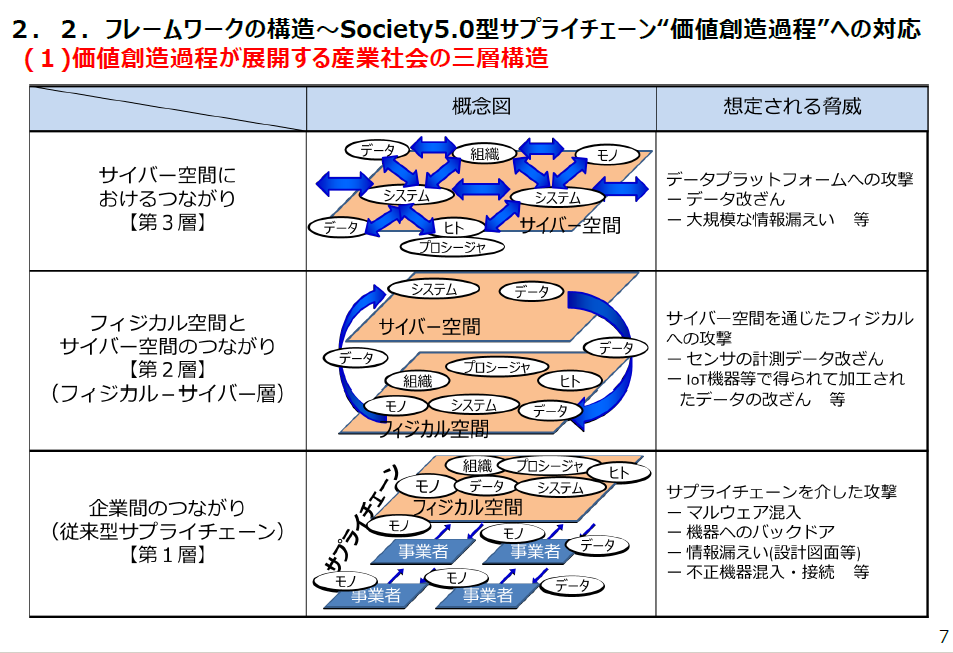
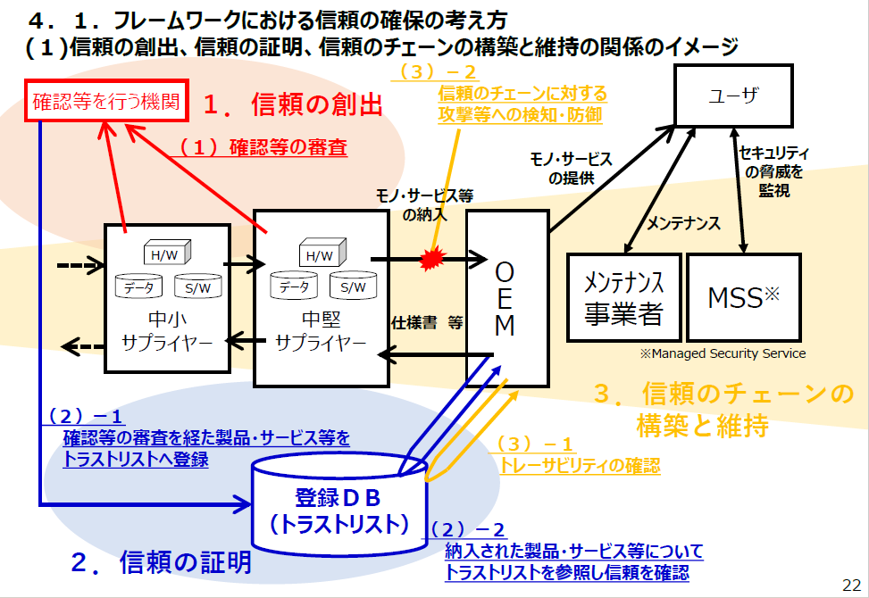

-
- 経済産業省商務情報政策局サイバーセキュリティ課
- １．はじめに~サイバーセキュリティを巡る状況の変化
- １．１．Society5.0、ConnectedIndustriesが実現する社会
- １．２．サイバー攻撃の脅威の増大
- ２．サイバー・フィジカル・セキュリティ対策フレームワークの考え方
- 【新版あり】２．１．フレームワークを策定する目的
- 【新版あり】２．２．フレームワークの構造～Society5.0型サプライチェーン 価値創造過程 への対応

- (１)価値創造過程が展開する産業社会の三層構造
- 
- 【新版あり】三層構造アプローチの意義
- 【新版あり】(２)価値創造過程に関わる６つの要素
- ３．Society5.0において必要なセキュリティ対策
- ３．１．各層において守るべき事項・リスク・対策の概要
- ３．２．各層におけるセキュリティ対策
- (１)企業間のつながり（従来型サプライチェーン）に係るセキュリティ対策(1/2)【第1層】
- (２)フィジカル空間とサイバー空間のつながりに係るセキュリティ対策(1/3)【第２層】
- (３)サイバー空間におけるつながりに係るセキュリティ対策(1/3)【第３層】
- ４．信頼の確保に向けて
- 【新版あり】４．１．フレームワークにおける信頼の確保の考え方

- (１)信頼の創出、信頼の証明、信頼のチェーンの構築と維持の関係のイメージ
- 